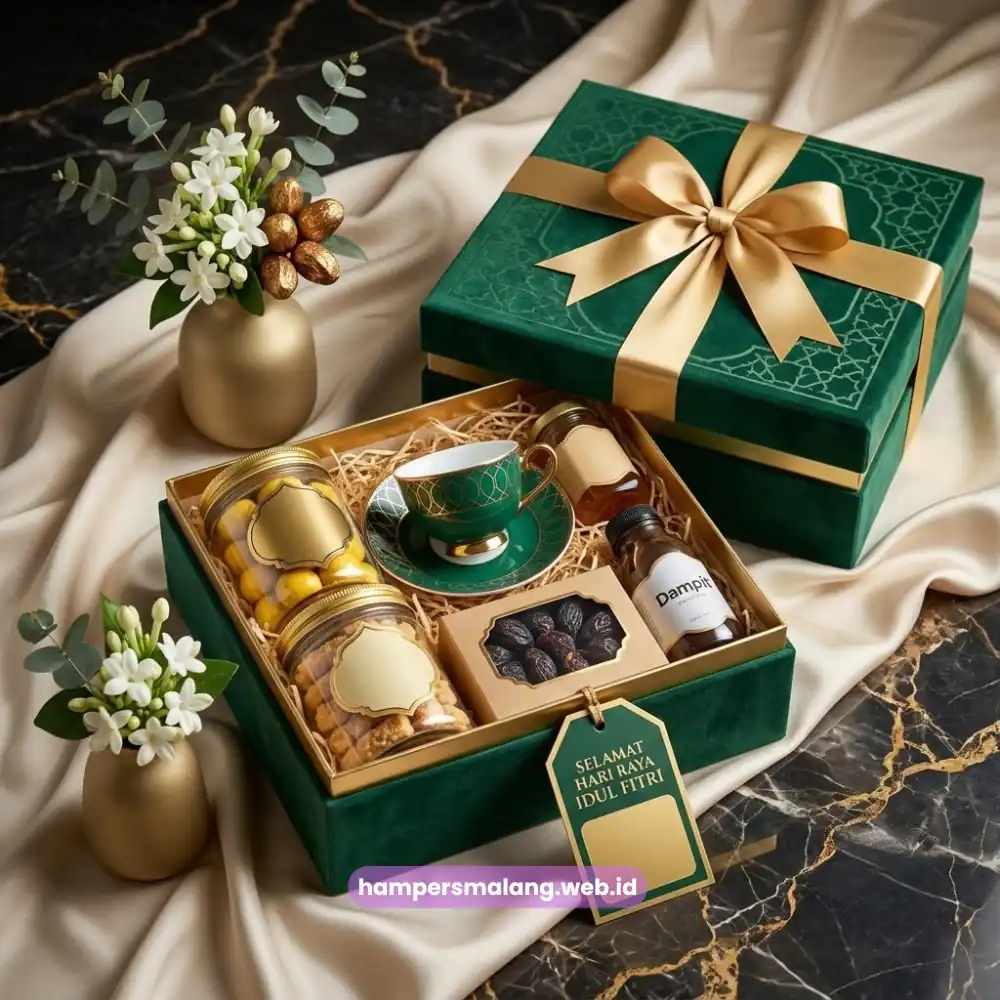

Mencari tempat pesan hampers Lebaran kantor di Malang yang siap melayani jumlah besar dan tepat waktu?
Hampers Malang menyediakan paket hampers Lebaran kantor dengan kemasan premium, opsi custom logo perusahaan, dan pengiriman ke seluruh wilayah Malang Raya.
Layanan ini dirancang khusus untuk kebutuhan korporat, mulai dari puluhan hingga ratusan unit sekaligus.
Setiap tahun, momen Lebaran menjadi kesempatan bagi perusahaan untuk menunjukkan apresiasi kepada karyawan, mitra kerja, dan klien.
Namun menyiapkan hampers dalam jumlah besar bukan perkara sederhana.
Divisi HR atau tim procurement harus memikirkan anggaran, kualitas isi, kerapian kemasan, hingga ketepatan waktu pengiriman agar hampers sampai sebelum cuti bersama dimulai.
Di sinilah kehadiran mitra hampers kantor yang berpengalaman menjadi krusial.
Mengapa Perusahaan di Malang Perlu Mitra Hampers Lebaran yang Andal?
Perusahaan yang mengurus hampers secara mandiri sering menghadapi kendala waktu, tenaga, dan konsistensi kualitas saat pesanan mencapai skala besar.
Bekerja sama dengan penyedia hampers berpengalaman membantu mengatasi kendala tersebut sekaligus menjaga citra profesional perusahaan.
Beberapa alasan utama mengapa kerja sama ini penting:
- Menghemat waktu tim internal yang seharusnya fokus pada operasional inti perusahaan.
- Menjamin konsistensi kualitas dan tampilan hampers untuk seluruh penerima, baik karyawan maupun klien.
- Memberi ruang kustomisasi berupa logo perusahaan, kartu ucapan, dan pemilihan isi sesuai anggaran.
- Menjamin pengiriman terjadwal ke banyak alamat sekaligus tanpa risiko keterlambatan menjelang cuti bersama.
Baca Juga: Manfaat Hampers Onboarding Karyawan bagi Budaya Kerja Perusahaan
Riset internal industri hadiah korporat di Indonesia menunjukkan bahwa permintaan hampers Lebaran korporat cenderung meningkat signifikan setiap tahun menjelang periode H-14 hingga H-7 Lebaran.
Sehingga pemesanan lebih awal menjadi faktor penentu ketersediaan stok premium.
Tren serupa juga tercatat pada laporan asosiasi UMKM kreatif yang mencatat lonjakan permintaan parcel korporat pada kuartal pertama setiap tahunnya.
Apa Saja yang Membuat Hampers Lebaran Kantor Berbeda dari Hampers Pribadi?
Hampers Lebaran kantor berbeda dari hampers pribadi terutama pada aspek skala pemesanan, standar kerapian, dan kebutuhan identitas merek.
Perusahaan umumnya memesan dalam jumlah besar dengan tampilan seragam untuk seluruh penerima, dilengkapi elemen branding seperti logo dan warna korporat.
Skala dan Konsistensi Pemesanan
Hampers kantor dipesan dalam jumlah puluhan hingga ratusan unit sekaligus.
Konsistensi menjadi prioritas utama karena seluruh karyawan atau klien perlu menerima kualitas dan tampilan yang setara.
Tanpa ada perbedaan mencolok yang dapat menimbulkan kesan kurang profesional.
Identitas Perusahaan pada Kemasan
Berbeda dengan hampers pribadi yang cenderung mengikuti selera individu, hampers kantor umumnya menonjolkan identitas perusahaan.
Penambahan logo pada box, pita, atau kartu ucapan membuat hampers berfungsi ganda.
Yaitu sebagai media apresiasi sekaligus sarana memperkuat citra merek di mata karyawan dan relasi bisnis.

Kebutuhan Anggaran yang Terukur
Procurement perusahaan biasanya menetapkan kisaran anggaran per unit yang harus dipatuhi secara konsisten untuk seluruh penerima.
Fleksibilitas dalam menyesuaikan isi hampers sesuai anggaran tanpa mengurangi kesan premium menjadi nilai tambah yang dicari banyak perusahaan.
Bagaimana Proses Pemesanan Hampers Lebaran Kantor di Malang?
Proses pemesanan hampers Lebaran kantor umumnya dimulai dari konsultasi kebutuhan, penentuan paket dan anggaran, hingga proses custom logo bila diperlukan.
Kemudian dilanjutkan dengan produksi dan quality control, hingga pengiriman terjadwal ke alamat penerima.
Alur ini dirancang agar tim internal perusahaan tidak perlu menangani detail teknis satu per satu.
Tahapan yang umum dilalui perusahaan saat memesan hampers dalam jumlah besar meliputi:
- Konsultasi kebutuhan, jumlah unit, dan estimasi anggaran per hampers.
- Pemilihan paket isi hampers sesuai target penerima, misalnya karyawan internal atau klien eksternal.
- Proses kustomisasi kemasan, termasuk penambahan logo perusahaan dan kartu ucapan.
- Produksi dan pengecekan kualitas sebelum hampers dikemas ulang untuk pengiriman.
- Pengiriman terjadwal ke satu alamat kantor atau ke banyak alamat penerima sekaligus di seluruh Malang Raya.
Menetapkan tenggat waktu pemesanan lebih awal, idealnya sejak dua hingga tiga minggu sebelum Lebaran.
Ini membantu memastikan ketersediaan stok premium dan mengurangi risiko antrean produksi menjelang puncak permintaan.
Baca Juga: Hampers Onboarding Karyawan Custom Branding untuk Identitas Perusahaan
Faktor Apa Saja yang Perlu Dipertimbangkan Saat Memilih Paket Hampers Kantor?
Perusahaan sebaiknya mempertimbangkan kesesuaian isi dengan citra merek, fleksibilitas anggaran, kapasitas produksi penyedia, dan kemampuan pengiriman serentak.
Keempat faktor ini saling berkaitan dan menentukan kelancaran distribusi hampers menjelang hari raya.
Kesesuaian Isi dengan Citra Merek
Isi hampers sebaiknya mencerminkan nilai perusahaan, misalnya produk lokal berkualitas untuk menonjolkan kepedulian terhadap ekonomi daerah.
Atau kombinasi makanan premium untuk kesan eksklusif kepada klien penting.
Fleksibilitas Anggaran per Unit
Setiap perusahaan memiliki kisaran anggaran berbeda untuk hampers karyawan dan hampers klien.
Paket yang dapat disesuaikan tanpa mengorbankan kerapian kemasan memberi keleluasaan bagi tim procurement.
Terutama dalam mengatur alokasi dana secara proporsional.
Kapasitas Produksi dan Ketepatan Waktu
Menjelang Lebaran, volume pemesanan hampers meningkat drastis di seluruh penyedia jasa.
Kapasitas produksi yang memadai serta rekam jejak pengiriman tepat waktu menjadi pertimbangan penting.
Ini penting agar hampers tiba sebelum cuti bersama dimulai.
Kemudahan Distribusi ke Banyak Alamat
Bila hampers akan dikirim langsung ke rumah masing-masing karyawan, kemampuan penyedia dalam mengelola pengiriman ke banyak alamat sekaligus menjadi nilai tambah.
Khususnya di seluruh Malang Raya, yang sangat signifikan bagi perusahaan dengan skema kerja hibrida.
Kesalahan Umum yang Perlu Dihindari Perusahaan
Beberapa kesalahan yang kerap terjadi saat perusahaan menyiapkan hampers Lebaran kantor antara lain memesan terlalu mendekati hari raya.
Selain itu, tidak menetapkan standar kualitas yang jelas, serta mengabaikan elemen branding pada kemasan.
Ketiga hal ini berdampak langsung pada kesan yang diterima karyawan maupun klien.
Pemesanan mendadak sering berujung pada keterbatasan pilihan isi dan risiko keterlambatan pengiriman.
Tanpa standar kualitas yang disepakati sejak awal, hasil akhir hampers berpotensi tidak seragam antar penerima.
Sementara itu, kemasan polos tanpa sentuhan identitas perusahaan kehilangan potensi sebagai media penguat citra merek.
Padahal, hal tersebut seharusnya bisa dimanfaatkan secara maksimal.
Hampers Lebaran kantor yang tepat mampu memperkuat hubungan perusahaan dengan karyawan dan relasi bisnis.
Sekaligus menjaga citra profesional di mata publik.
Kunci keberhasilannya terletak pada perencanaan yang matang dan pemilihan mitra yang berpengalaman menangani volume besar.
Serta kustomisasi yang selaras dengan identitas merek perusahaan.
Tanya Jawab Seputar Tempat Pesan Hampers Lebaran Kantor
Pemesanan korporat umumnya dapat disesuaikan mulai dari jumlah puluhan unit, dengan skema harga yang lebih kompetitif untuk pemesanan dalam jumlah besar.
Bisa. Hampers Malang menyediakan opsi custom logo pada box, pita, atau kartu ucapan untuk memperkuat identitas perusahaan pada setiap hampers yang dikirim.
Idealnya pemesanan dilakukan dua hingga tiga minggu sebelum Lebaran agar mendapatkan pilihan isi terlengkap dan menghindari antrean produksi menjelang puncak permintaan.
Bisa. Layanan pengiriman mendukung distribusi ke banyak alamat sekaligus di seluruh Malang Raya, cocok untuk perusahaan dengan karyawan yang bekerja dari berbagai lokasi.
Perusahaan dapat menghubungi tim Hampers Malang untuk konsultasi kebutuhan dan mendapatkan penawaran harga korporat sesuai jumlah dan anggaran yang ditetapkan.

Butuh Hampers Perusahaan?
Solusi Hampers & Corporate Gift Kreatif di Jawa Timur.
Ditulis oleh Tim Maroon Souvenir
Sahabat mahasiswa dan pelaku bisnis di Malang Raya. Berpengalaman menangani merchandise event kampus, instansi pemerintahan, dan hotel berbintang di Batu.